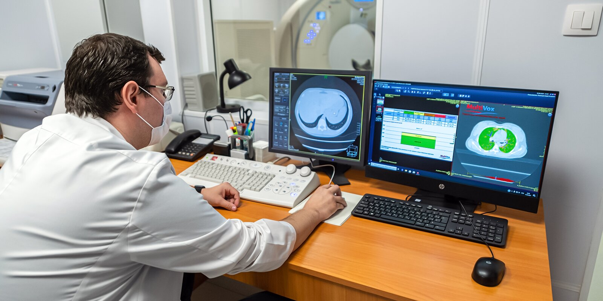

Two innovative projects of Moscow acknowledged at international competition
Two Moscow projects became winners of the coveted Quality Innovation Award. Moscow Electronic School (MES) and Artificial Intelligence-Based Computer Vision Technology for Medical Image Analysis in Radiology were among the 25 winners and prize-winners of the international round. Experts assessed the projects’ novelty, convenience, user orientation and effectiveness.
More than 560 innovative projects from Russia, China, the Czech Republic, Spain, Serbia, India, Israel, Sweden, South Africa and other countries were submitted to the competition.
MES: interactive, accessible and interesting
The Moscow Electronic School project was named the winner of the Innovations in Education category.
MES is a joint development of the Moscow Education Department and Science and Information Technology Department. Founded in 2016, it is a single digital educational platform for students, teachers and parents. The key MES services include a library of education materials, an electronic diary, Moskvyonok and Student Portfolio.
The MES library contains over two million educational units. These are lesson plans, video tutorials, tens of thousands of interactive applications, electronic teaching aids, textbooks and fiction literature, as well as tests to prepare for final exams and Academic Olympics. Apart from that, students have access to more than 30 virtual laboratories in physics, biology, chemistry, mathematics, computer science, technology and drawing. They can not only carry out online experiments and improve their knowledge, but also turn digital space into a place of virtual battles.
The MES electronic diary is one of the most important services for children and parents in Moscow. It is not just about schedule and grades, it is an integrated online educational environment where one can complete assignments, participate in discussions and video calls, study video lessons, do tests, try game applications and improve academic performance. Parents can use Moskvyonok to quickly check what time their child came to school and left classes, as well as control their meals and expenses in the canteen.
In the new academic year, MES added another service — the Student Portfolio with all the information about the achievements of students in studies, sports, science, creative work, extracurricular education or research activities.
Artificial intelligence safeguarding health
The Artificial Intelligence-Based Computer Vision Technology for Medical Image Analysis in Radiology project was also among the winners (Healthcare Innovation).
The project of using AI-based computer vision technologies for the analysis of medical images in radiology is being implemented by the Moscow Information Technology Department and the Social Development Complex. Integrated into the Unified Radiological Information Service (URIS EMIAS), AI services analyze images obtained during radiological examinations and help detect cancer and lung pathologies, signs of coronary heart disease, thoracic aortic aneurysm, COVID-19 and other serious diseases, even at early stages.

Neural networks process X-rays, mammograms, CT scans, and chest photofluorography and identify areas of possible pathologies in the image requiring closer attention of the doctor. Moreover, artificial intelligence describes the signs of the disease, indicates the likelihood of a diagnosis, and provides additional special information for doctors. This improves the quality and speed of disease detection and allows for a faster identification of patients requiring prompt medical care.
All images are stored in the cloud, and doctors can instantly access test results. Patients don’t have to wait so long for the report after the examination. All protocols and images are added to the electronic medical record available on mos.ru and in the EMIAS.INFO mobile application.
The Quality Innovation Award has been held since 2007. It is organized by the Finnish Quality Association in partnership with organizations from Russia, China, the Czech Republic, Estonia, Hungary, Israel, Latvia, Lithuania, Serbia, Spain, Sweden and other countries.
In 2020, the Moscow Innovation Ecosystem project for testing innovative solutions was among the winners and prize-winners of the competition. It allows developers to test their technologies at city-owned and commercial premises before being placed on the market, while the authorities and potential customers can analyze their effectiveness.